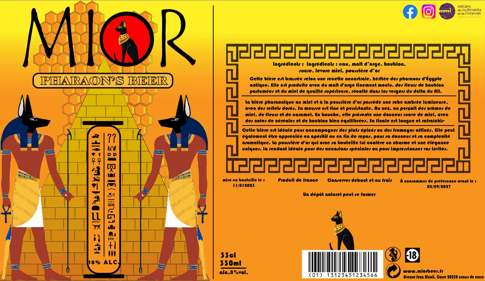

J'ai créé une étiquette de bière dans le cadre de mon travail lors de ma formation en MMI à l'IUT de Corse. Le concept de ce projet consistait à concevoir une étiquette de bière à partir de rien. J'ai suivi plusieurs étapes pour y parvenir. Tout d'abord, j'ai choisi le goût de ma bière, qui est le Miel et Or, comme vous pouvez le voir. Je souhaitais quelque chose d'élégant et original. Ensuite, j'ai recherché une palette de couleurs cohérente. J'ai opté pour le jaune, l'orange, le bleu et le rouge. Le jaune représente la couleur de l'or, l'orange représente celle du miel, le bleu évoque la couleur du lapis lazuli, un élément emblématique de la culture égyptienne. Je reviendrai sur l'Égypte un peu plus tard. Enfin, j'ai ajouté une touche de contraste en utilisant le rouge, rappelant ainsi le soleil puissant de l'Égypte, tout en restant fidèle au thème que j'ai choisi.
Maintenant, pourquoi ai-je choisi l'Égypte comme thème pour l'étiquette de ma bière ? La réponse est simple : l'or était une ressource très prisée par les Égyptiens, et le miel avait des effets bénéfiques pour la santé. De plus, j'ai trouvé que les couleurs se mariaient parfaitement avec cet univers. Ensuite, j'ai conçu l'étiquette en y ajoutant de nombreux détails égyptiens tels que le célèbre Anubis, une pyramide, une stèle avec des hiéroglyphes et un chat placé au sommet, car je rappelle que les Égyptiens vénéraient les chats. Enfin, j'ai décidé de mettre en arrière-plan une ruche en transparence réduite pour rappeler le miel. Après toutes ces étapes, j'ai élaboré un plan commercial pour promouvoir ma bière. Le fichier PDF ainsi que le rapport de mon travail sera disponible ci-dessous.